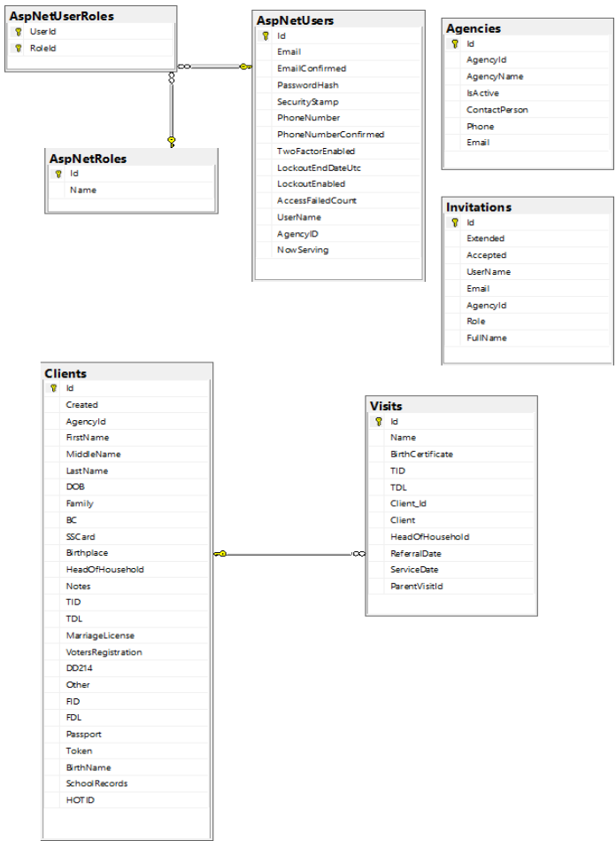

Database
Eref is a database driven application built using SQL Server technology. In the desktop environment Eref is built using the Sql Server Express database engine. In the online environment at AppHarbor a full SQL Server is used. The two versions are compatible with each other with respect to the database features used. SQL Server Management Studio 2016 (SSMS) was used to manage both database engines. In the desktop environment, Windows Authentication is used to connect to the Sql Server Express database. In the online enviroment, SQL Server Authentication is used to connect to the SQL Server database.
When application Eref was created at AppHarbor, a free version of SQL Server was added on through the AppHarbor interface.
After application Eref was deployed AppHarbor it was run for the first time without knowledge of the database connection string. This worked because
the connection string configured as the value of SQLSERVER_CONNECTION_STRING configure in the <appSettings> section of Web.config is overwritten
with the connection string for the add-on SQL Server at application deploy time.
When Eref was accessed through
https://eref.apphb.com
it presented the Login screen which was used to login the SuperAdmin (sa) with the password configured on Startup.cs. Successful login created the
ASP.NET Idenetity 2.0 tables in the database and served up the Home view of the SuperadminController. This view reported the connection string, which
connection string was then used to connect to the database through SSMS.
This bootstrapping process was followed by creation of the tables managed by the referrals data context as described in the Database Diagram section below.
Connection String
In the desktop environment, SSMS was used to create an empty project database by executing the SQL query
create database ErefDB
The Visual Studio Server Explorer (found under the Eref project View menu) was then used to discover the connection string to database ErefDB by
creating a new Data Connection to it and copying the Connection String property of the data connection as the value of the variable DefaultConnection
in the <connectionStrings> section of Web.config. This value is used as the connection string during the creation of the ASP.NET Identity tables
when the SuperAdmin user, sa, is created. See the section of Entity Framework Code First in the Infrastructure tab.
The connection string is also configured as the value of SQLSERVER_CONNECTION_STRING in
the <appSettings> section of Web.config. This setting is read programatically by the constructors on IdentityDb.cs and ReferallsDB.cs. See the code
base. Getting the value of the connection string programatically eliminates the need to configure
the connection string in the usual place, the <connectionStrings> section of Web.config.
The online version of Eref is hosted as an application at AppHarbor and it uses a database server provided as an add-on. The add-on database server includes a database which serves as the application database, so it is not necessary to create the application database as was done above for the desktop version.
The connection string of the SQL Server instance at AppHarbor is found under the Configuration Variables section for the Eref application. The
Configuration Variables section states that the configuration variables should be accessed programatically, since the values may be updated by the
add-on provider without notice. An AppHarbor knowledge base article explains that the
connection string is injected as the value of SQLSERVER_CONNECTION_STRING into the <appSettings> section of Web.config at application
deploy time. This injection overwrites the statically configured value mentioned above.
To discover the value of the connection string in the staging and production environments, the SuperadminController was modified to report the value
stored in <appSettings>. Each time the Super Admin logs in, the value will be displayed by view ~/Views/Superadmin/Home.cshtml. Knowing this value
allows a connection to the Eref database to be made through SSMS using SQL Server Authentication.
Both ELMAH and log4net share the configuration string used by the Eref application. This sharing is accomplished by configurig the connection string ErefConnectionString on Web.config and setting the connection string alias for the SQL Server add-on at AppHarbor to be ErefConnectionString. When application Eref is deployed, this alias will overwrite the configured value on file Web.config by the value the connection string for the AppHarbor database. This is explained in the same knowledge base article referenced above.
Database Diagram

The 3 tables in the upper left of the above diagram are created by ASP.NET Identity 2.0 to manage registered users of Eref. The 3 tables are managed by their own data context which cannot be augmented by additional tables. However, data fields can be added to table AspNetUsers to connect it to tables created in a separate data context. This is what has been done for project Eref. The data fields AgencyID and NowServing have been added to table AspNetUsers to connect it to the 4 tables Agencies, Invitations, Clients and Visits, which are the data tables used to manage Eref referrals. These 4 tables are managed by their own data context.
The NowServing field of the AspNetUsers table is used to keep track of the client currently being served by an Eref user. The usage of this data field is explained in the Implementation tab.
The 2 data contexts of project Eref are referred to as IdentityDb and ReferralsDB. (See the section Entity Framework Code First of the Infrastructure tab.) The technique for establishing a single connection string over 2 data contexts is described in Scott Allen's Pluralsight video.
The tables in the diagram used to manage Eref referrals were created using a script file. The technique for creating a script file is described in the Getting a SQL Script section of this article. This technique is used to keep the deployd versions of the Eref database in synch with the development version. According to this article, the command
PM> update-database -ConfigurationTypeName Eref.DataContexts.ReferralMigrations.Configuration -Script -SourceMigration $InitialDatabase
will create a script file necessary to create the tables for Eref referrals using all the migrations applied since the initial migration.
Managing Users
Eref is a role based database application administered by a Superadmin. The Superadmin has the responsibilty of establishing a login account for each Eref user to prevent a user from specifying his/her own role. Most users will be in the role of Client Advocate, which has been established by the Superadmin.
The Superadmin will be given a user name for a new user together with the agency the user works for. For example, if Mary Atwood who works for the Salvation Army would like to become an Eref Client Advocate under the user name Mary, this request would be presented to the Superadmin user at Main Street Ministries. Provided that the user name Mary is not already in use, the Superadmin user would use a private interface to enter Mary Atwood in the Invitations table under UserName Mary with FullName Mary Atwood. Through the private interface the Superadmin would also enter an email address for Mary and select the Salvation Army as the agency that she represents and select Client Advocate as her role. When saved through the private interface, this will create a record in the Invitations table which is in effect an invitation for Mary Atwood to register under user name Mary.
The Superadmin will notify Mary that her account has been created and that she may register for its use using user name Mary, the email address she has provided and a password of her choosing. When Mary registers, the user name and email address she provides will be checked against the Invitiations table. If this pair of identifiers is not found in the Invitations table, Mary's attempt to register will be rejected. IF they are found, a record will be created for her in the AspNetUsers table using the password she has specified and using the role of Client Advocate from the Invitations table. The AgencyID field of the created record (obtained from the Invitations table) will point to the record representing the Salvation Army in the Agencies table. On subsequent visits to Eref, Mary may simply login with the credentials established by her registration. When logged in she will be recognized as a Client Advocate for the Salvation Army and will see only records of clients served by the Salvation Army.